Image credits
Every reproduction on this site is taken from Wikimedia Commons, where each file page records its source and copyright status. Thumbnails were re-encoded for the web; follow the links for full-resolution originals.
| File | Licence | |
|---|---|---|
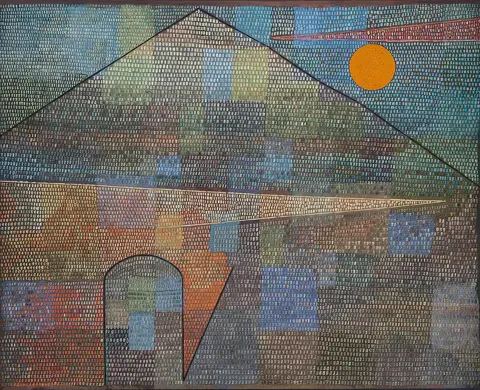 | Ad Parnassum, Paul Klee (1932, 274).jpg Paul Klee, 1932 | Public domain |
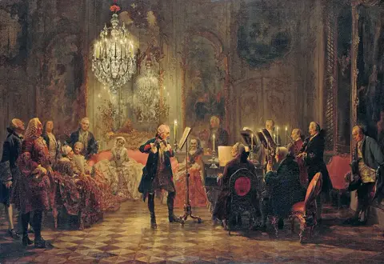 | Adolph Menzel - Flötenkonzert Friedrichs des Großen in Sanssouci - Google Art Project.jpg Adolph von Menzel, from 1850 until 1852 date QS:P571,+1850-00-00T00:00:00Z/8,P580,+1850-00-00T00:00:00Z/9,P582,+1852-00-00T00:00:00Z/9 | Public domain |
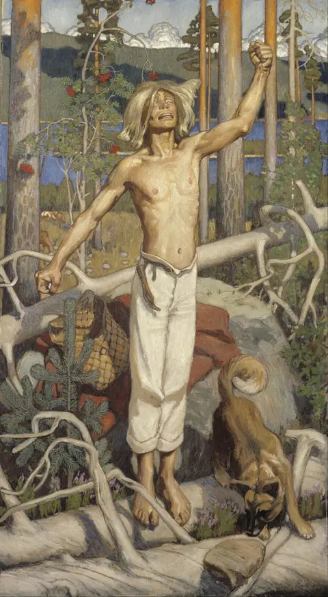 | Akseli Gallen-Kallela - Kullervo Cursing - Google Art Project.jpg Akseli Gallen-Kallela, 1899 date QS:P571,+1899-00-00T00:00:00Z/9 | Public domain |
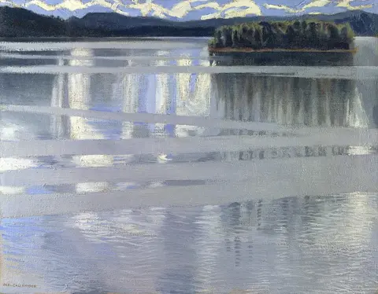 | Akseli Gallen-Kallela - Lake Keitele, 1905.JPG Akseli Gallen-Kallela, 1905 date QS:P571,+1905-00-00T00:00:00Z/9 | Public domain |
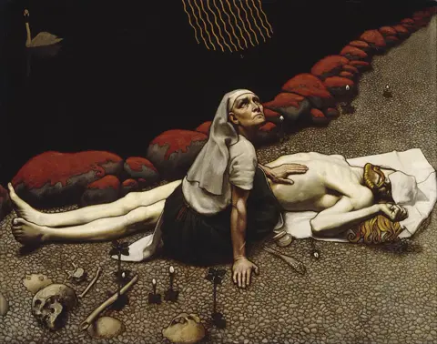 | Akseli Gallen-Kallela - Lemminkäinen's Mother - Google Art Project.jpg Akseli Gallen-Kallela, 1897 date QS:P571,+1897-00-00T00:00:00Z/9 | Public domain |
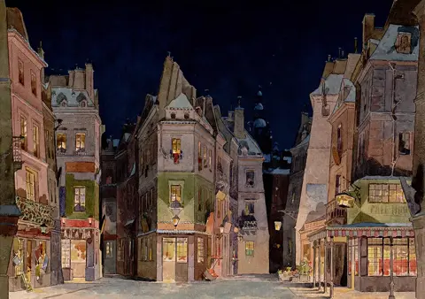 | Al quartiere latino, bozzetto di Adolf Hohenstein per La Bohème (1896) - Archivio Storico Ricordi ICON000086 - Restoration.jpg Adolfo Hohenstein / Adam Cuerden, 1896 date QS:P571,+1896-00-00T00:00:00Z/9 | CC BY-SA 4.0 |
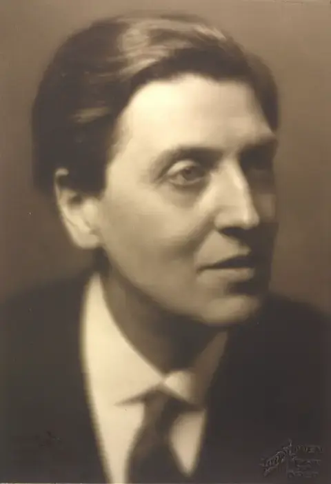 | Alban Berg (1885–1935) 1927 © Georg Fayer (1892–1950) OeNB 10450741.jpg Georg Fayer, 1927-03 | Public domain |
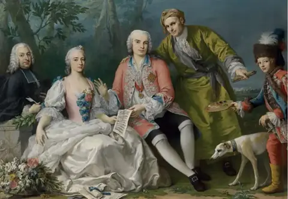 | Amigoni e friends.png Felton Bequest, 1950, between circa 1750 and circa 1752 | CC BY-SA 4.0 |
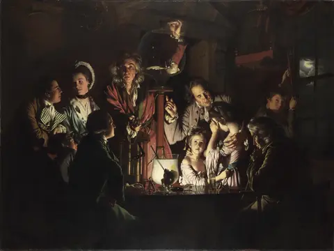 | An Experiment on a Bird in an Air Pump by Joseph Wright of Derby, 1768.jpg Joseph Wright of Derby, 1768 date QS:P571,+1768-00-00T00:00:00Z/9 | Public domain |
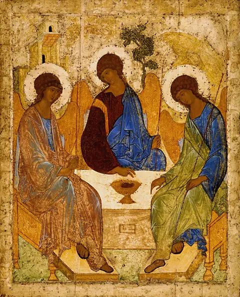 | Andrey Rublev - Св. Троица - Google Art Project.jpg Andrei Rublev, from 1425 until 1427 date QS:P571,+1425-00-00T00:00:00Z/8,P580,+1425-00-00T00:00:00Z/9,P582,+1427-00-00T00:00:00Z/9 | Public domain |
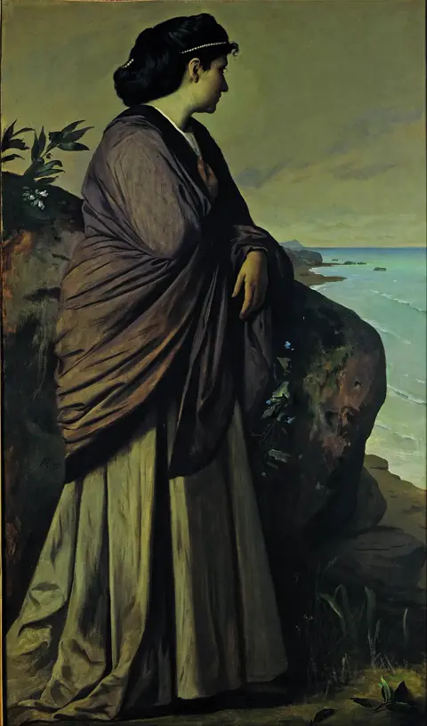 | Anselm Feuerbach - On the Seashore (Modern Iphigenia) - Google Art Project.jpg Anselm Feuerbach, 1875 | Public domain |
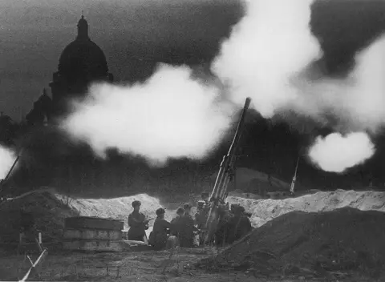 | Anti aircraft Leningrad 1941.JPG Boris Kudoyarov, Taken on 24 November 1941 | Public domain |
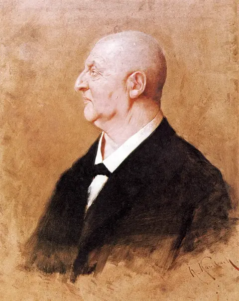 | Anton Bruckner (Kaulbach).jpg Hermann Kaulbach, 1885 date QS:P571,+1885-00-00T00:00:00Z/9 | Public domain |
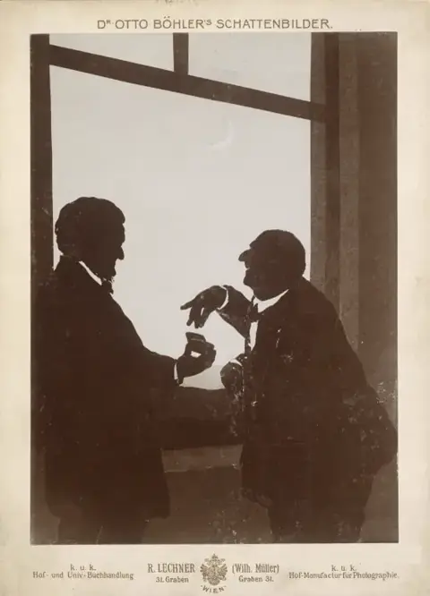 | Anton Bruckner und Richard Wagner. Schattenbild von Otto Böhler (1847–1913).jpg Otto Böhler, circa 1885 date QS:P,+1885-00-00T00:00:00Z/9,P1480,Q5727902 | Public domain |
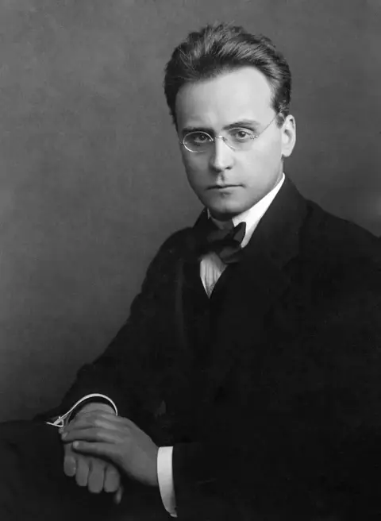 | Anton Webern in Stettin, October 1912.jpg | Public domain |
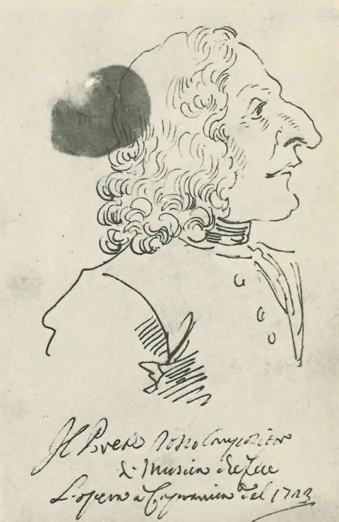 | Antonio Vivaldi (by Pier Leone Ghezzi) Rom, Bibl Vat - Codici Ottoboniani latini 3114, fol26.jpg Pier Leone Ghezzi, 1730-1740? | Public domain |
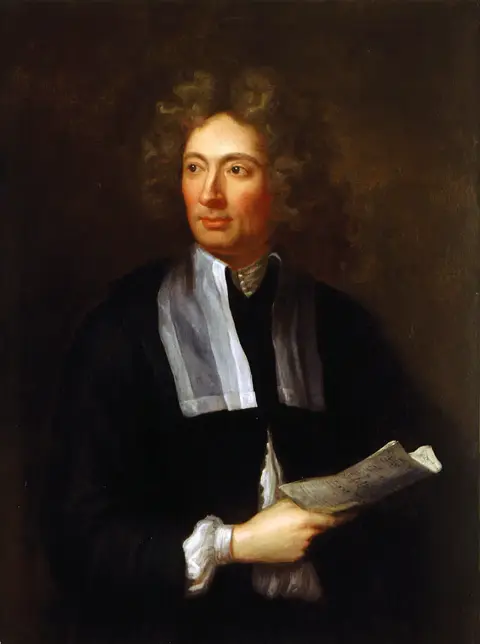 | Arcangelo Corelli, portrait by Hugh Howard (1697).jpg Hugh Howard, between 1697 and 1698 date QS:P,+1697-00-00T00:00:00Z/8,P1319,+1697-00-00T00:00:00Z/9,P1326,+1698-00-00T00:00:00Z/9 | Public domain |
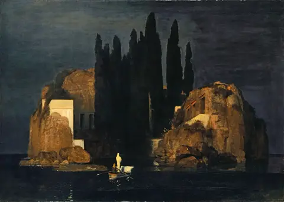 | Arnold Böcklin - Die Toteninsel I (Basel, Kunstmuseum).jpg Arnold Böcklin, May 1880 date QS:P571,+1880-05-00T00:00:00Z/10 | Public domain |
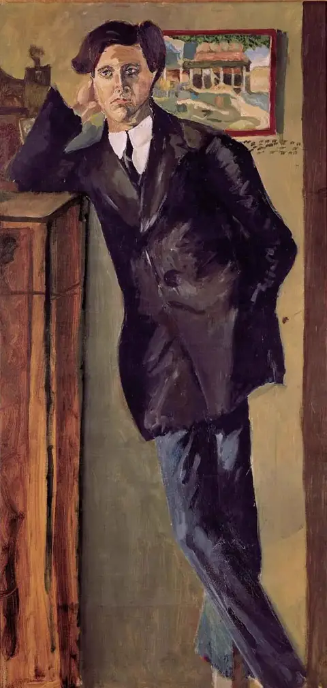 | Arnold Schönberg Alban Berg 1910.jpg Arnold Schönberg, 1910 | Public domain |
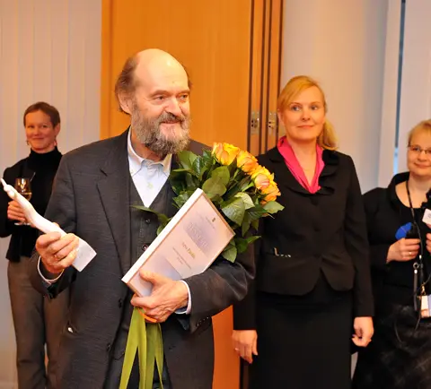 | Arvo Pärt, 2011.jpg Estonian Foreign Ministry, 2011-01-05 15:09 | CC BY 2.0 |
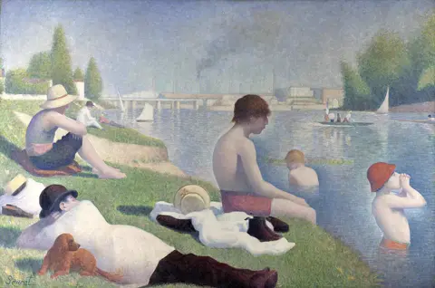 | Baigneurs a Asnieres.jpg Georges Seurat, 1884 | Public domain |
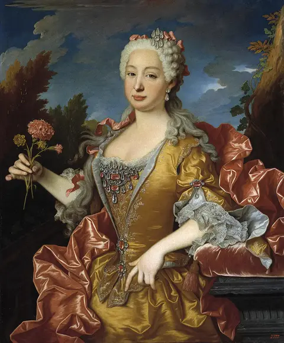 | Barbaradebragança.jpg Jean Ranc, 1729 | Public domain |
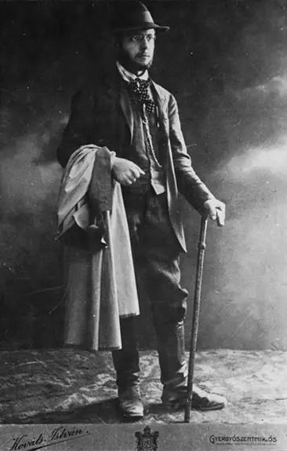 | Bartók Béla Csík megyei vándorútján.jpg Kováts István (fotóművész) (1881–1942), circa 1903 date QS:P,+1903-00-00T00:00:00Z/9,P1480,Q5727902 | Public domain |
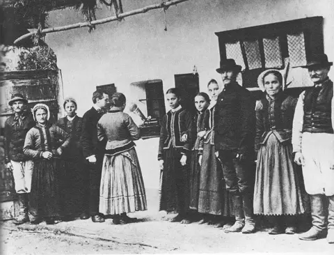 | Bartok recording folk music.jpg Unknown author Unknown author, 1908 | Public domain |
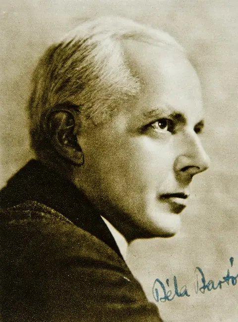 | Béla Bartók WDL11594.png , 1922 date QS:P571,+1922-00-00T00:00:00Z/9 | Public domain |
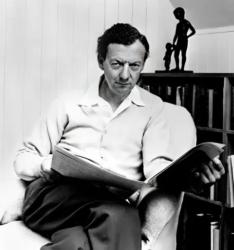 | Benjamin Britten, London Records 1968 publicity photo for Wikipedia (restored).png According to information on the photograph, it was originally taken by photographer Hans Wild for High Fidelity magazine (published in the United States)., Back of the photo says 1968, it is stamped as being used in 1971, 1972, and 1973. | Public domain |
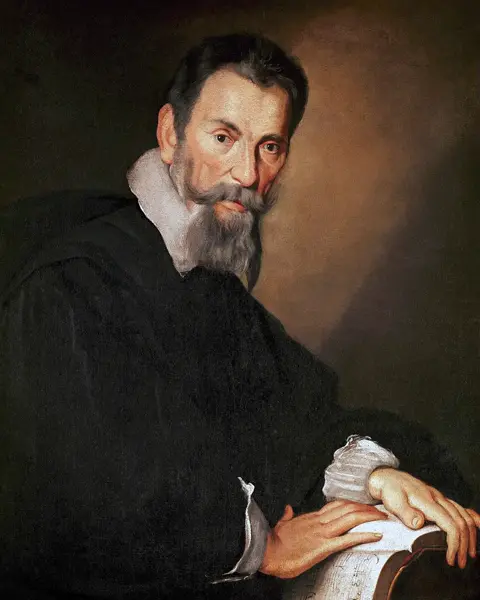 | Bernardo Strozzi - Claudio Monteverdi (c.1630).jpg Bernardo Strozzi, circa 1630 date QS:P571,+1630-00-00T00:00:00Z/9,P1480,Q5727902 | Public domain |
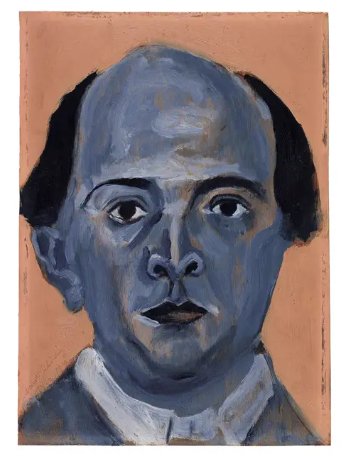 | Blaues Selbstportrait.jpg Arnold Schoenberg, 1910 date QS:P571,+1910-00-00T00:00:00Z/9 | Public domain |
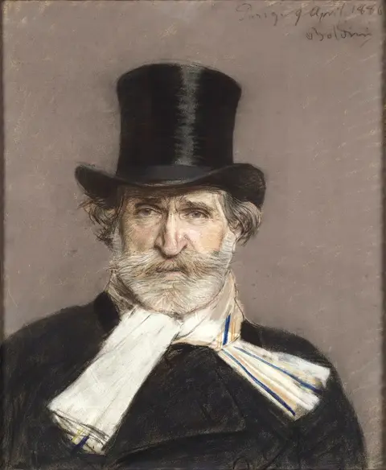 | Boldini - Ritratto di Giuseppe Verdi (1886) Google Art Project.jpg Giovanni Boldini, 1886 | Public domain |
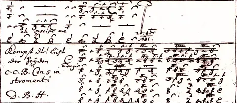 | BuxWV83 organ tablature.jpg Dieterich Buxtehude, 1681 | Public domain |
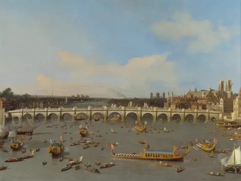 | Canaletto - Westminster Bridge, with the Lord Mayor's Procession on the Thames - Google Art Project.jpg Giovanni Antonio Canal, 1747 | Public domain |
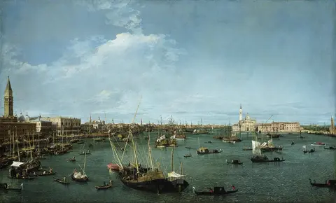 | Canaletto (Giovanni Antonio Canal) - Bacino di San Marco, Venice - Google Art Project.jpg Giovanni Antonio Canal, 1738 | Public domain |
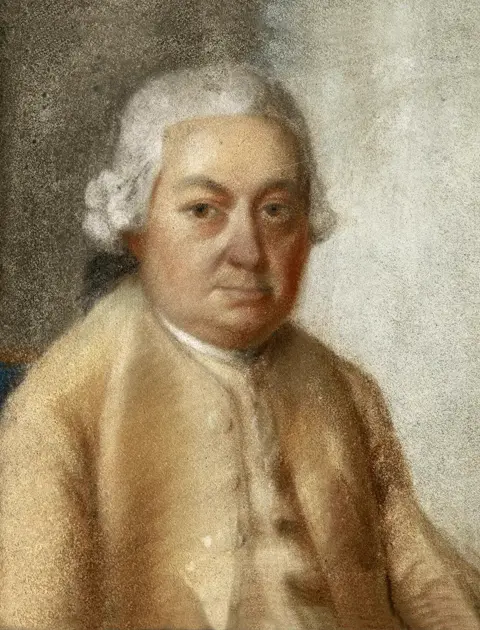 | Carl Philipp Emanuel Bach.jpg After Johann Philipp Bach, circa 1780 date QS:P571,+1780-00-00T00:00:00Z/9,P1480,Q5727902 | Public domain |
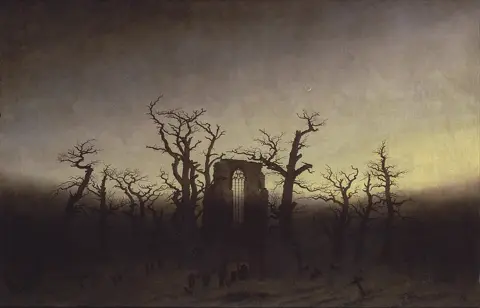 | Caspar David Friedrich - Abtei im Eichwald - Google Art Project.jpg Caspar David Friedrich, between 1809 and 1810 date QS:P,+1850-00-00T00:00:00Z/7,P1319,+1809-00-00T00:00:00Z/9,P1326,+1810-00-00T00:00:00Z/9 | Public domain |
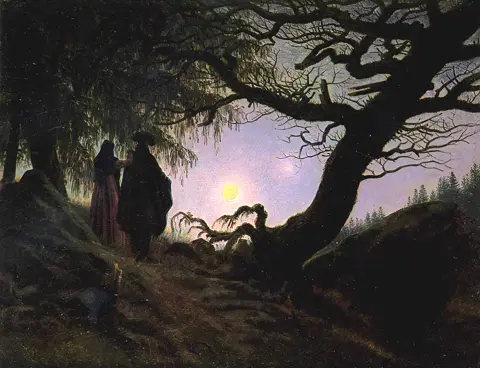 | Caspar David Friedrich - Mann und Frau in Betrachtung des Mondes - Alte Nationalgalerie Berlin.jpg Caspar David Friedrich, 1824 | Public domain |
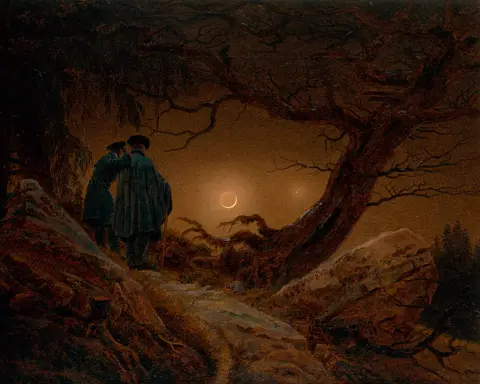 | Caspar David Friedrich - Two Men Contemplating the Moon - Google Art Project.jpg Caspar David Friedrich, between 1819 and 1820 date QS:P,+1850-00-00T00:00:00Z/7,P1319,+1819-00-00T00:00:00Z/9,P1326,+1820-00-00T00:00:00Z/9 | Public domain |
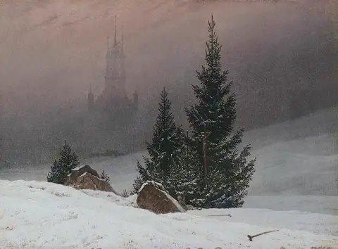 | Caspar David Friedrich - Winterlandschaft mit Kirche (National Gallery London).jpg Caspar David Friedrich, probably 1811 | Public domain |
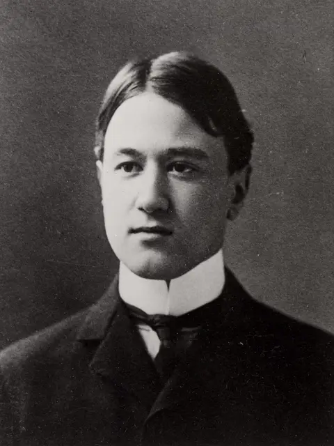 | Charles Ives grad photo.jpg Unknown author Unknown author, 1898 | Public domain |
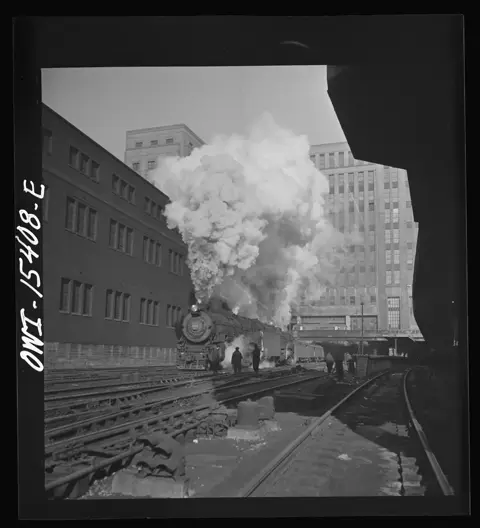 | Chicago, Illinois. Double header Pennsylvania railroad train pulling out of Union station. The building in the background is the United States Post Office.tif Delano, Jack, 1914-1997, January 1943 | Public domain |
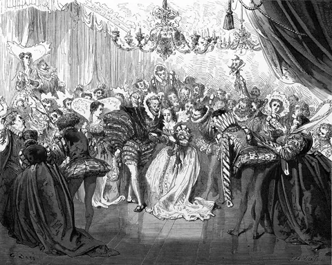 | Cinderella by Gustav Dore (136548285).jpg Gustave Doré, 1867 | Public domain |
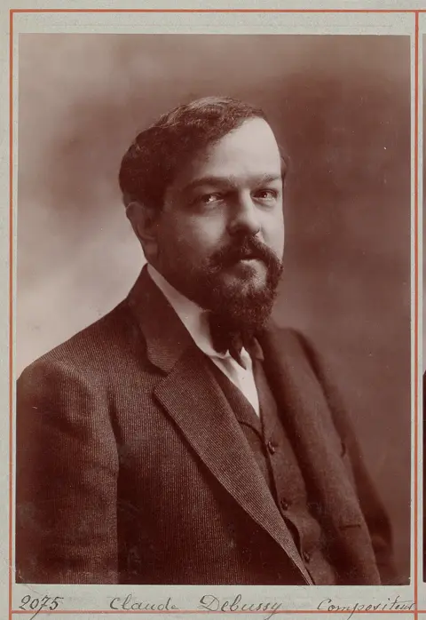 | Claude Debussy by Atelier Nadar - Original.jpg Atelier Nadar, 1890-1910 | Public domain |
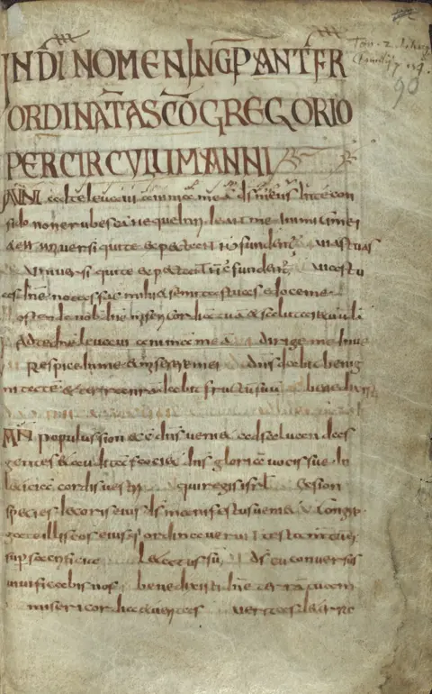 | Codex 10127-10144 fol 90.png Unknown writer, circa 800 | Public domain |
| Componist Gyorgy Ligeti , kop, Bestanddeelnr 932-8516.jpg Marcel Antonisse / Anefo, 1984-02-01 | CC0 | |
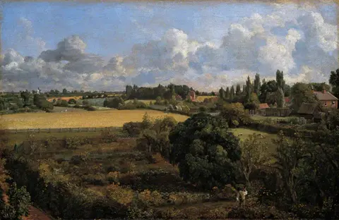 | Constable - Golding Constable's Kitchen Garden, c.1815, R.1955-96.2.jpg John Constable | Public domain |
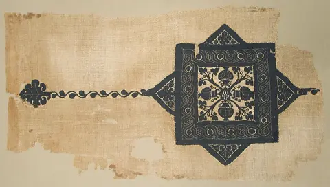 | Coptic Textile Fragment MET wb-89.18.95.jpeg , late 3rd–5th century | CC0 |
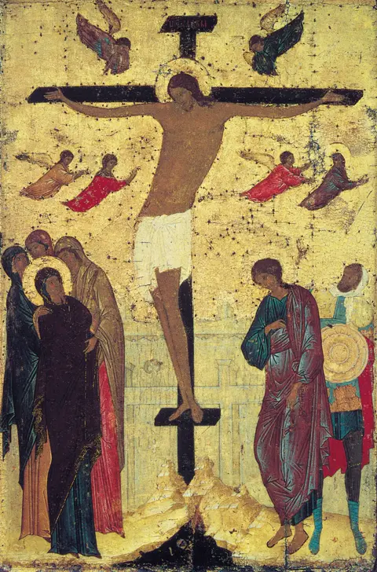 | Crucifixion of Jesus, Russian icon by Dionisius, 1500.jpg Dionisius, 1500 date QS:P571,+1500-00-00T00:00:00Z/9 | Public domain |
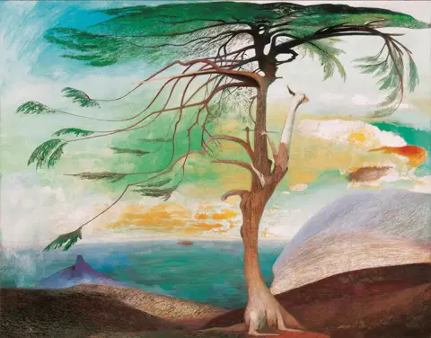 | Cskt-maganyos cedrus (1907).jpg Tivadar Csontváry Kosztka, 1907 date QS:P571,+1907-00-00T00:00:00Z/9 | Public domain |
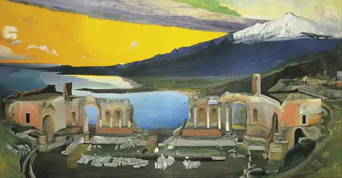 | Csontváry Kosztka, Tivadar - Ruins of the Greek Theatre at Taormina - Google Art Project.jpg Tivadar Csontváry Kosztka, between 1904 and 1905 date QS:P571,+1904-00-00T00:00:00Z/8,P1319,+1904-00-00T00:00:00Z/9,P1326,+1905-00-00T00:00:00Z/9 | Public domain |
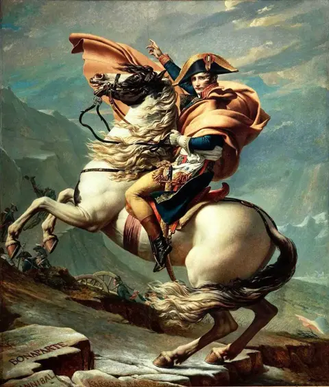 | David - Napoleon crossing the Alps - Malmaison1.jpg Jacques-Louis David, 1800 | Public domain |
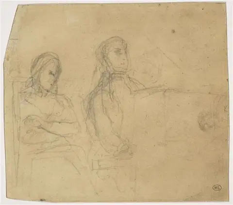 | Delacroix - Dessin préparatoire pour le double portrait de Frédéric Chopin et George Sand, RF 9357, Recto.jpg Eugène Delacroix, 19 th century date QS:P571,+1850-00-00T00:00:00Z/7 | Public domain |
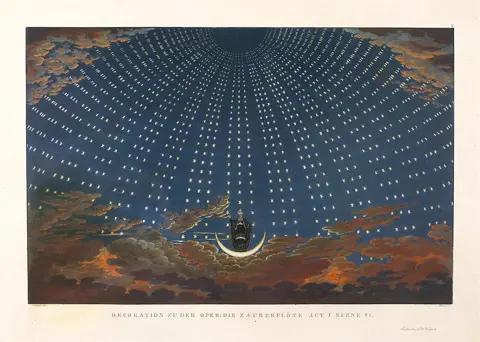 | Design for The Magic Flute- The Hall of Stars in the Palace of the Queen of the Night, Act 1, Scene 6 MET DT214829.jpg Karl Friedrich Schinkel, 1847–49 | CC0 |
| Dmitri Shostakovich credit Deutsche Fotothek adjusted.jpg Fotothek_df_roe-neg_0002792_002_Portrait_Dmitri_Dmitrijewitsch_Schostakowitchs_im_Publikum_der_Bachfeier.jpg : Roger & Renate Rössing, credit Deutsche Fotothek. derivative work: Improvist ( talk ), Taken on 28 July 1950 | CC BY-SA 3.0 de | |
| Dvorak 1882.jpg Unknown author Unknown author, 1882 date QS:P571,+1882-00-00T00:00:00Z/9 | Public domain | |
| Edmund Blair Leighton - Tristram and Isolde (Royal Academy of Arts, 1907).jpg Edmund Blair Leighton, Unknown date | Public domain | |
| Edvard Munch - The Scream - NG.M.00939 - National Museum of Art, Architecture and Design.jpg Edvard Munch, 1893 | Public domain | |
| Edward Elgar.jpg Unknown author Unknown author, by 1905 date QS:P,+1905-00-00T00:00:00Z/7,P1326,+1905-00-00T00:00:00Z/9 | Public domain | |
| Erik Satie - BNF1.jpeg Unattributed, between 1900 and 1975 date QS:P,+1950-00-00T00:00:00Z/7,P1319,+1900-00-00T00:00:00Z/9,P1326,+1975-00-00T00:00:00Z/9 | Public domain | |
| Eroica Beethoven title.jpg | Public domain | |
| Esterhaza Palace 1920.jpg , 1920 | Public domain | |
| Eugène Delacroix - George Sand - WGA06193.jpg Eugène Delacroix, 1838 date QS:P571,+1838-00-00T00:00:00Z/9 | Public domain | |
| Eugène Delacroix - Illustrations for Faust- Marguerite with the wheel - 1933.145.11 - Cleveland Museum of Art.jpg Eugène Delacroix, 1828 date QS:P571,+1828-00-00T00:00:00Z/9 | CC0 | |
| Europe a Prophecy, copy D, object 1 (Bentley 1, Erdman i, Keynes i) British Museum.jpg William Blake, 1794 date QS:P571,+1794-00-00T00:00:00Z/9 | Public domain | |
| Fannymendelssohn-improved.jpg her later husband, Wilhelm Hensel (1794-1861), 1829 | Public domain | |
| Felix Mendelssohn Bartholdy by Eduard Magnus (1833).jpg Eduard Magnus, 1833 date QS:P571,+1833-00-00T00:00:00Z/9 | Public domain | |
| Firebird (big).jpeg Ivan Bilibin, 1900s date QS:P,+1900-00-00T00:00:00Z/8 | Public domain | |
| Francesco Hayez - Ritratto di Alessandro Manzoni.jpg Francesco Hayez, 1841 | Public domain | |
| François Couperin.jpg Jean Charles Flipart / After André Bouys, 1735 date QS:P571,+1735-00-00T00:00:00Z/9 | Public domain | |
| Frank Bernard Dicksee - Romeo and Juliet, 1884.jpg Frank Bernard Dicksee, 1884 date QS:P571,+1884-00-00T00:00:00Z/9 | Public domain | |
| Franz Hanfstaengl - Clara Schumann (1857).jpg Franz Hanfstaengl, 1857 | Public domain | |
| Franz Kafka, 1923.jpg Unknown photographer, between 1923 and 1924 date QS:P,+1923-00-00T00:00:00Z/8,P1319,+1923-00-00T00:00:00Z/9,P1326,+1924-00-00T00:00:00Z/9 | Public domain | |
| Franz Liszt by Nadar, March 1886.png Nadar, 1886-03 | Public domain | |
| Franz Schubert, watercolor portrait by Wilhelm August Rieder, 1825.jpg Wilhelm August Rieder, 1825 date QS:P571,+1825-00-00T00:00:00Z/9 | Public domain | |
| Frédéric Chopin - Eugène Delacroix - Musée du Louvre Peintures RF 1717.jpg Eugène Delacroix, 1838 | Public domain | |
| Fux-Gradus-ad-Parnassum.jpg Johann Joseph Fux, 1725 | Public domain | |
| Gabriel Fauré - Ch. Reutlinger, Paris - btv1b8417644r.jpg Reutlinger, Carl (1816-1888). Photographe, 1900 date QS:P571,+1900-00-00T00:00:00Z/9 | Public domain | |
| Gallen Kallela Symposion.jpg Akseli Gallen-Kallela, 1894 date QS:P571,+1894-00-00T00:00:00Z/9 | Public domain | |
| George Frideric Handel by Thomas Hudson.jpg Thomas Hudson (died 1779), Unknown date , but author died in 1779 | Public domain | |
| Gerard ter Borch (der Jüngere) (1617 - 1681) - The Concert - 791G - Gemäldegalerie.jpg Gerard ter Borch, 1670s date QS:P,+1670-00-00T00:00:00Z/8 / between 1670 and 1680 date QS:P,+1650-00-00T00:00:00Z/7,P1319,+1670-00-00T00:00:00Z/9,P1326,+1680-00-00T00:00:00Z/9 | Public domain | |
| Gerstl, Richard - Arnold Schoenberg Seated (1906).jpg Richard Gerstl, circa 1905-1906 | Public domain | |
| Ghent Altarpiece - Singing Angels (left).jpg Jan van Eyck / Hubert van Eyck, 1432 | Public domain | |
| Giacomo Puccini by Mario Nunes Vais.jpg Photographer: Mario Nunes Vais (1856–1932), circa 1900 date QS:P,+1900-00-00T00:00:00Z/9,P1480,Q5727902 | Public domain | |
| Gustav Klimt - Attersee - Google Art Project.jpg Gustav Klimt, 1900 date QS:P571,+1900-00-00T00:00:00Z/9 | Public domain | |
| Gustav Klimt - Beethovenfries, "Die Leiden der schwachen Menschheit" und "Der wohlgerüstete Starke" (Tafel 3, linke Langwand) - 5987-3 - Österreichische Galerie Belvedere.jpg Gustav Klimt, 1901 | Public domain | |
| Gustav Klimt, Judith II.jpg Gustav Klimt, 1909 date QS:P571,+1909-00-00T00:00:00Z/9 | Public domain | |
| Hanuš Schwaiger - Water Gnome - Google Art Project.jpg Hanuš Schwaiger, 1886 date QS:P571,+1886-00-00T00:00:00Z/9 | Public domain | |
| Hartmann -- Plan for a City Gate.jpg Viktor Hartmann | Public domain | |
| Hartmann Chicks sketch for Trilby ballet.jpg Viktor Hartmann, 1871 | Public domain | |
| Harvard Theatre Collection - Bakst, MS Thr 414.4 (9).jpg Léon Bakst, 1912 date QS:P571,+1912-00-00T00:00:00Z/9 | Public domain | |
| Hector Berlioz - d'après le portrait de Signol (1831) - btv1b84157254.jpg Signol, Émile (1804-1892). Peintre du modèle, 1900 date QS:P571,+1900-00-00T00:00:00Z/9 | Public domain | |
| Hildegard von Bingen.jpg Unknown author Unknown author | Public domain | |
| Hogarth coram.jpg William Hogarth, 1740 date QS:P571,+1740-00-00T00:00:00Z/9 | Public domain | |
| Igor Stravinsky LOC 32392u.jpg George Grantham Bain Collection, Not dated. From age and fashion, between c. 1920 and c. 1925 | Public domain | |
| Ilya Repin - Портрет композитора М.П.Мусоргского - Google Art Project.jpg Ilya Repin, 1881 date QS:P571,+1881-00-00T00:00:00Z/9 | Public domain | |
| JA-portrait-1-LW.jpg The original uploader was Macror at English Wikipedia . ( Original text: Deborah O'Grady ), 5 January 2008 (original upload date) ( Original text: 1-4-2008 ) | CC BY-SA 3.0 | |
| Jacques-Émile Blanche - Portrait de Francis Poulenc - PPP3772 - Musée des Beaux-Arts de la ville de Paris.jpg Jacques-Émile Blanche, 1920 | Public domain | |
| Jacques-Louis David, Le Serment des Horaces.jpg Jacques-Louis David, 1784/85 | Public domain | |
| James Abbott McNeill Whistler - Nocturne- Blue and Silver - Chelsea - Google Art Project.jpg James McNeill Whistler, 1871 date QS:P571,+1871-00-00T00:00:00Z/9 | Public domain | |
| James McNeill Whistler - Nocturne en bleu et or.jpg James McNeill Whistler, circa 1872-1875 | Public domain | |
| Jean Sibelius, 1913.jpg fi:Daniel Nyblin (1856–1923), 1913 | Public domain | |
| Jean-Philippe Rameau by Jacques Aved.jpg Attributed to Joseph Aved / Formerly attributed to Jean-Baptiste-Siméon Chardin, circa 1728 date QS:P571,+1728-00-00T00:00:00Z/9,P1480,Q5727902 | CC BY-SA 4.0 | |
| Johann Sebastian Bach - Google Arts Project.jpg Elias Gottlob Haussmann, 1748 | Public domain | |
| Johann Sebastian Bach 1746.jpg Elias Gottlob Haussmann, 1746 date QS:P571,+1746-00-00T00:00:00Z/9 | Public domain | |
| Johannes Vermeer - Lady at the Virginal with a Gentleman, 'The Music Lesson' - Google Art Project.jpg Johannes Vermeer, 1662 | Public domain | |
| JohannesBrahms.jpg C. Brasch , Berlin ( biography ), 1889 | Public domain | |
| John Closterman (1660-1711) (by or after) - Henry Purcell - NPG 1352 - National Portrait Gallery.jpg John Closterman, 1695 | Public domain | |
| John Joseph Barker (1824-1904) - Near the Malvern Hills - 3063 - Government Art Collection.jpg John Joseph Barker | Public domain | |
| John Singer Sargent - Gabriel Fauré.jpg John Singer Sargent, 1889 | Public domain | |
| Joseph Haydn, portrait by Thomas Hardy.jpg Thomas Hardy, 1791 date QS:P571,+1791-00-00T00:00:00Z/9 | Public domain | |
| Joseph Karl Stieler's Beethoven mit dem Manuskript der Missa solemnis.jpg Joseph Karl Stieler, 1820 date QS:P571,+1820-00-00T00:00:00Z/9 | Public domain | |
| Joseph Mallord William Turner - Staffa, Fingal's Cave - Google Art Project.jpg J. M. W. Turner, between 1831 and 1832 date QS:P571,+1831-00-00T00:00:00Z/8,P1319,+1831-00-00T00:00:00Z/9,P1326,+1832-00-00T00:00:00Z/9 | Public domain | |
| Josquin.jpg Charles Gustave Housez, 1881 | CC BY 3.0 | |
| Kaija Saariaho in 2022.png Ministère de l'Europe et des Affaires étrangères, 2022-03-08 | CC BY 3.0 | |
| Katsushika Hokusai - Thirty-Six Views of Mount Fuji- The Great Wave Off the Coast of Kanagawa - Google Art Project.jpg Katsushika Hokusai, from 1830 until 1832 date QS:P,+1830-00-00T00:00:00Z/8,P580,+1830-00-00T00:00:00Z/9,P582,+1832-00-00T00:00:00Z/9 | Public domain | |
| Klimt - Diesen Kuss der ganzen Welt.jpeg Gustav Klimt, 1902 date QS:P571,+1902-00-00T00:00:00Z/9 | Public domain | |
| Kurtág György-001 (cropped).jpg Lenke Szilágyi, 2014 | CC BY-SA 4.0 | |
| KustodievDSCH.jpg Boris Kustodiev, 1919 date QS:P571,+1919-00-00T00:00:00Z/9 | Public domain | |
| L'Embarquement pour Cythère, by Antoine Watteau, from C2RMF retouched.jpg Jean-Antoine Watteau, 1717 | Public domain | |
| Le Dromadaire (Apollinaire - Le Bestiaire, ou Cortège d'Orphée).jpg Raoul Dufy, 1911 date QS:P571,+1911-00-00T00:00:00Z/9 | Public domain | |
| Le Petit Poucet (136547871).jpg Gustave Doré, 1867 | Public domain | |
| LenbachRichardWagner.jpg Franz von Lenbach, circa 1882/83 | Public domain | |
| Léon Bakst (1866-1924) - The Sleeping Beauty, The Prince Out Hunting Sees the Castle Where the Princess Lies Sleeping - 89.1995.6 - Waddesdon Manor.jpg Léon Bakst, between 1913 and 1922 date QS:P,+1950-00-00T00:00:00Z/7,P1319,+1913-00-00T00:00:00Z/9,P1326,+1922-00-00T00:00:00Z/9 | Public domain | |
| Léon Bakst 001.jpg Léon Bakst, 1910 date QS:P571,+1910-00-00T00:00:00Z/9 | Public domain | |
| Leoš Janáček.jpg Anonymous Unknown author, 1899 | Public domain | |
| Les Six Tableau.jpg Jacques-Émile Blanche, 1922 date QS:P571,+1922-00-00T00:00:00Z/9 | Public domain | |
| Lili Boulanger, 1er Grand Prix de Rome de musique - btv1b9022337j.jpg Agence de presse Meurisse. Agence photographique (commanditaire), 1913 date QS:P571,+1913-00-00T00:00:00Z/9 | Public domain | |
| Lili et Nadia Boulanger - btv1b9022360s.jpg Agence de presse Meurisse. Agence photographique (commanditaire), 1913 date QS:P571,+1913-00-00T00:00:00Z/9 | Public domain | |
| Liska Bystrouska 9.png Stanislav Lolek, 1920 | Public domain | |
| Louis Carrogis dit Carmontelle - Portrait de Wolfgang Amadeus Mozart (Salzbourg, 1756-Vienne, 1791) jouant à Paris avec son père Jean... - Google Art Project.jpg Louis Carrogis Carmontelle, 1763 date QS:P571,+1763-00-00T00:00:00Z/9 | Public domain | |
| Machaut 1.jpg | Public domain | |
| Marc - Tierschicksale (Die Bäume zeigten ihre Ringe, die Tiere ihre Adern), 1913, Inv. 1739.jpg Franz Marc | Public domain | |
| Maurice Ravel 1925.jpg Unknown author Unknown author The image holder, the Bibliothèque nationale de France has not identified a photographer. (Follow link and click on "Detailed information".), 1925 date QS:P571,+1925-00-00T00:00:00Z/9 | Public domain | |
| Mezzetin MET DP170811.jpg Jean-Antoine Watteau, circa 1718 date QS:P571,+1718-00-00T00:00:00Z/9,P1480,Q5727902 –20 | CC0 | |
| Modest Musorgskiy, 1870.jpg , 1870 | Public domain | |
| Monet - Impression, Sunrise.jpg Claude Monet, 1872 date QS:P571,+1872-00-00T00:00:00Z/9 | Public domain | |
| Moritz von Schwind Schubertiade large.jpg Moritz von Schwind, 1868 date QS:P571,+1868-00-00T00:00:00Z/9 | Public domain | |
| Mozart-Lange.jpg Joseph Lange, 1782-1783 | Public domain | |
| Mucha-Moravian Teachers' Choir-1911.jpg Alphonse Mucha, 1911 date QS:P571,+1911-00-00T00:00:00Z/9 | Public domain | |
| Olivier Messiaen (1986).jpg Rob Croes for Anefo, 1986-11-27 | CC0 | |
| Othello et Desdémone à Venise - Théodore Chassériau - Musée du Louvre Peintures RF 3897.jpg Théodore Chassériau, 1850 | Public domain | |
| Pérotin - Viderunt omnes.jpg música de Pérotin, 13 th century date QS:P,+1250-00-00T00:00:00Z/7 | Public domain | |
| Persconferentie componist Morton Feldman in concertgebouw Amsterdam in verband m, Bestanddeelnr 928-6142.jpg Rob Bogaerts for Anefo, 1976-05-31 | CC0 | |
| Photo of Gustav Mahler by Moritz Nähr 10.jpg Moritz Nähr, 1907 | Public domain | |
| Photograph of Alexander Scriabin in 1914.jpg Anonymous Unknown author, 1914 | Public domain | |
| Piero della Francesca - Madonna del Parto - WGA17613.jpg Piero della Francesca, 1467 date QS:P571,+1467-00-00T00:00:00Z/9 | Public domain | |
| Pierre Boulez , Franse dirigent, Bestanddeelnr 921-1210.jpg Joost Evers / Anefo, 1968-02-28 | CC0 | |
| Pierre Puvis de Chavannes - The Poor Fisherman - Google Art Project.jpg Pierre Puvis de Chavannes, 1881 date QS:P571,+1881-00-00T00:00:00Z/9 | Public domain | |
| Piet Mondrian, 1942 - Broadway Boogie Woogie.jpg Piet Mondrian, between 1942 and 1943 date QS:P571,+1942-00-00T00:00:00Z/8,P1319,+1942-00-00T00:00:00Z/9,P1326,+1943-00-00T00:00:00Z/9 | Public domain | |
| Polyphony, 1932 Paul Klee.jpg Paul Klee, 1932 | Public domain | |
| Porträt des Komponisten Pjotr I. Tschaikowski (1840-1893).jpg Nikolai Kuznetsov, 1906 | Public domain | |
| Postcard-1910 Strauss Richard.jpg unidentified photograph, ~ 1900 - 1910 | Public domain | |
| PPN663944058 Fanny Hensel, geb. Mendelsohn-Bartholdy (1847).jpg Wilhelm Hensel / Eduard Mandel, 1847 date QS:P571,+1847-00-00T00:00:00Z/9 | Public domain | |
| Prokofieff (i.e. Prokofiev) LCCN2014708419 Crop 2.jpg Bain News Service, publisher. Restored by User:MyCatIsAChonk, circa 1918 date QS:P,+1918-00-00T00:00:00Z/9,P1480,Q5727902 | Public domain | |
| Prométhée (1907) - Jean Delville.jpg Jean Delville, 1907 | Public domain | |
| Prometheus, The Poem of Fire, Op. 60, by Alexander Scriabin, cover, 1911, from Boston Symphony Orchestra collection.jpg Daderot, 12 April 2024 (according to Exif data) | Public domain | |
| Rachmaninoff at Ivanovka.jpg Unknown author Unknown author, 1890s date QS:P,+1890-00-00T00:00:00Z/8 | Public domain | |
| Raffaello - Spozalizio - Web Gallery of Art.jpg Raphael, 1504 date QS:P571,+1504-00-00T00:00:00Z/9 | Public domain | |
| Raphael School of Athens.jpg Raphael, 1511 | Public domain | |
| Retrato de Domenico Scarlatti.jpg Domingo Antonio Velasco, 1738 date QS:P571,+1738-00-00T00:00:00Z/9 | Public domain | |
| Retrato de Palestrina.jpg Unknown author Unknown author, 16 th century date QS:P,+1550-00-00T00:00:00Z/7 | Public domain | |
| Rhinegold and the Valkyries p 004.jpg Arthur Rackham, 1910 | Public domain | |
| Richard Gerstl Familie Schönberg 1908.jpg Richard Gerstl, July 1908 date QS:P571,+1908-07-00T00:00:00Z/10 | Public domain | |
| Rimsky-Korsakov by Repin.jpg Ilya Repin, 1893 date QS:P571,+1893-00-00T00:00:00Z/9 | Public domain | |
| Ritter Tod, from the series Brahmsphantasie MET DP822933.jpg Max Klinger, Unknown date | CC0 | |
| Robert and Clara Schumann.jpg | Public domain | |
| Robert Havell after John James Audubon, The Mocking Bird, 1827, NGA 32162.jpg Robert Havell after John James Audubon, 1827 date QS:P571,+1827-00-00T00:00:00Z/9 | CC0 | |
| Robert Havell after John James Audubon, Wood Thrush, 1829, NGA 32214.jpg Robert Havell after John James Audubon, 1829 date QS:P571,+1829-00-00T00:00:00Z/9 | CC0 | |
| Robert Schumann 1839.jpg Josef Kriehuber, 1839 date QS:P571,+1839-00-00T00:00:00Z/9 | Public domain | |
| Roerich 02 Idols.jpg Nikolai Roerich (Никола́й Константи́нович Ре́рих), 1901-12-31 | Public domain | |
| Roerich Rite of Spring.jpg Nicholas Roerich, 1912 | Public domain | |
| Schwind Begraebnis.jpg Moritz von Schwind, 1850 date QS:P571,+1850-00-00T00:00:00Z/9 | Public domain | |
| Sculptuur van Lorenzo op de graftombe van Lorenzo de' Medici door Michelangelo in de Cappelle Medicee te Florence Michelangelo. Florence, Nieuwe Sacristy bij S. Lorenzo. Lorenzo. Detail van de grafto, RP-F-00-4388.jpg Rijksmuseum, ca. 1875 - ca. 1900 | CC0 | |
| Segantini - Nature (La natura), 1897–1899.jpg Giovanni Segantini, 1897 | Public domain | |
| Sergei Rachmaninoff LOC 30160 cropped.jpg Bain News Service, Unknown date | Public domain | |
| Siegfried and the Twilight of the Gods p 004.jpg Arthur Rackham, 1911; New Impression's plates are the same as those of the first edition. | Public domain | |
| Sofia Gubaidulina (2016-11-03).jpg Mikhail Kozlovsky, Taken on 3 November 2016 | CC BY 4.0 | |
| Somov Sergei Rachmaninoff 1925.JPG Konstantin Somov, 1925 date QS:P571,+1925-00-00T00:00:00Z/9 | Public domain | |
| Stained glass window of the Sainte-Chapelle (Paris)-The books of Judith and Job.jpg Yair Haklai, 2017-04-12 09:55:49 | CC BY-SA 4.0 | |
| Star Ushak Carpet MET DP270096.jpg , probably 17th century | CC0 | |
| Steve Reich, composer, cropped.jpg Gotfryd, Bernard, photographer, between 1982 and 1984 date QS:P,+1982-00-00T00:00:00Z/8,P1319,+1982-00-00T00:00:00Z/9,P1326,+1984-00-00T00:00:00Z/9 | Public domain | |
| Suzanne Valadon - Portrait d'Erik Satie.jpg Suzanne Valadon, 1893 date QS:P571,+1893-00-00T00:00:00Z/9 | Public domain | |
| The Attack by Vereshchagin (1887-1895, GIM).jpg Vasily Vereshchagin, between 1887 and 1895 date QS:P571,+1850-00-00T00:00:00Z/7,P1319,+1887-00-00T00:00:00Z/9,P1326,+1895-00-00T00:00:00Z/9 | Public domain | |
| The dance to the music of time c. 1640.jpg Nicolas Poussin, between 1634 and 1636 date QS:P,+1634-00-00T00:00:00Z/8,P1319,+1634-00-00T00:00:00Z/9,P1326,+1636-00-00T00:00:00Z/9 | Public domain | |
| The Golden Cockerel (Bilibin) 10.jpg Ivan Bilibin, 1907 | Public domain | |
| The Hand of Guido.jpg Unknown author Unknown author, 2011-06-08 | Public domain | |
| The Lute Player-Caravaggio (Hermitage).jpg Caravaggio, circa 1600 date QS:P571,+1600-00-00T00:00:00Z/9,P1480,Q5727902 | Public domain | |
| The Triumph of Death by Pieter Bruegel the Elder.jpg Pieter Brueghel the Elder, circa 1562 date QS:P571,+1562-00-00T00:00:00Z/9,P1480,Q5727902 | Public domain | |
| The Veteran in a New Field MET DP102298.jpg Winslow Homer, 1865 date QS:P571,+1865-00-00T00:00:00Z/9 | CC0 | |
| Thomas Adès conducts the National Youth Orchestra of Great Britain at Snape Maltings Concert Hall (2017).jpg Matt Jolly, 2017-08-03 20:05:27 | CC BY-SA 4.0 | |
| Thomaskirche und -schule 1723.jpg Johann Gottfried Krügner, 1723 date QS:P571,+1723-00-00T00:00:00Z/9 | Public domain | |
| Title page of Rameau’s New System of Musical Theory.jpg Jean-Philippe Rameau, 1726-01-01 | CC0 | |
| Topographia Austriae superioris modernae - Closter Florian.jpg Georg Matthäus Vischer, erstmals erschienen 1674, Ausgabe 1677 | Public domain | |
| Tsarevna-Lebed by Mikhail Vrubel.jpg Mikhail Vrubel, 1900 date QS:P571,+1900-00-00T00:00:00Z/9 | Public domain | |
| Wassily Kandinsky - Impression III (Concert) - Google Art Project.jpg Wassily Kandinsky, 1911 date QS:P571,+1911-00-00T00:00:00Z/9 | Public domain | |
| Wassily Kandinsky, Komposition V, 1911.jpg Wassily Kandinsky, 1911 date QS:P571,+1911-00-00T00:00:00Z/9 | Public domain | |
| Watteau, Jean-Antoine - Les Plaisirs du Bal - Google Art Project.jpg Watteau, Jean-Antoine (1684 - 1721) – Artist Details on Google Art Project, c. 1715-17 | Public domain | |
| Wiener Secessionsgebäude um 1900.jpg Unknown author Unknown author (The photographer is unknown and not mentioned in the source.), before 31 December 1900 date QS:P,+1900-12-31T00:00:00Z/7,P1326,+1900-12-31T00:00:00Z/11 | Public domain | |
| Wilhelm Gause Hofball in Wien.jpg Wilhelm Gause, 1900 date QS:P571,+1900-00-00T00:00:00Z/9 | Public domain | |
| William Hogarth - A Rake's Progress, Plate VIII, In Bedlam - B1981.25.1418 - Yale Center for British Art.jpg William Hogarth, 1735 | CC0 | |
| William Hogarth 017.jpg William Hogarth, circa 1736 date QS:P571,+1736-00-00T00:00:00Z/9,P1480,Q5727902 | Public domain | |
| Winslow Homer - Snap the Whip (Butler Institute of American Art).jpg Winslow Homer, 1872 date QS:P571,+1872-00-00T00:00:00Z/9 | Public domain |
.jpg){kind=link}


_-_Archivio_Storico_Ricordi_ICON000086_-_Restoration.jpg){kind=link}
_1927_%C2%A9_Georg_Fayer_(1892%E2%80%931950)_OeNB_10450741.jpg){kind=link}


_-_Google_Art_Project.jpg){kind=link}

.jpg){kind=link}
.jpg){kind=link}

_Rom,_Bibl_Vat_-_Codici_Ottoboniani_latini_3114,_fol26.jpg){kind=link}
.jpg){kind=link}
.jpg){kind=link}


.png){kind=link}
.jpg){kind=link}

_Google_Art_Project.jpg){kind=link}


_-_Bacino_di_San_Marco,_Venice_-_Google_Art_Project.jpg){kind=link}


.jpg){kind=link}

.jpg){kind=link}


.jpg){kind=link}


.jpg){kind=link}


_British_Museum.jpg){kind=link}

.jpg){kind=link}
.jpeg){kind=link}


.jpg){kind=link}


_(1617_-_1681)_-_The_Concert_-_791G_-_Gem%C3%A4ldegalerie.jpg){kind=link}
.jpg){kind=link}
.jpg){kind=link}


_-_5987-3_-_%C3%96sterreichische_Galerie_Belvedere.jpg){kind=link}


.jpg){kind=link}
_-_btv1b84157254.jpg){kind=link}


_(by_or_after)_-_Henry_Purcell_-_NPG_1352_-_National_Portrait_Gallery.jpg){kind=link}
_-_Near_the_Malvern_Hills_-_3063_-_Government_Art_Collection.jpg){kind=link}


.jpg){kind=link}


.jpg){kind=link}
.jpg){kind=link}

_-_The_Sleeping_Beauty,_The_Prince_Out_Hunting_Sees_the_Castle_Where_the_Princess_Lies_Sleeping_-_89.1995.6_-_Waddesdon_Manor.jpg){kind=link}


_jouant_%C3%A0_Paris_avec_son_p%C3%A8re_Jean..._-_Google_Art_Project.jpg){kind=link}

,_1913,_Inv._1739.jpg){kind=link}


.jpg){kind=link}


.jpg){kind=link}

.jpg){kind=link}
_LCCN2014708419_Crop_2.jpg){kind=link}
_-_Jean_Delville.jpg){kind=link}


,_1897%E2%80%931899.jpg){kind=link}


.jpg){kind=link}

-The_books_of_Judith_and_Job.jpg){kind=link}


.jpg){kind=link}

_10.jpg){kind=link}

.jpg){kind=link}


.jpg){kind=link}


_-_Google_Art_Project.jpg){kind=link}


.jpg){kind=link}